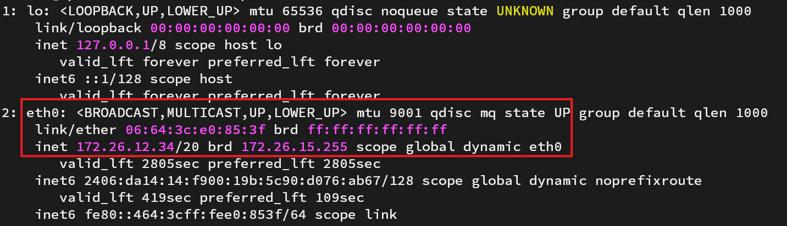

本文通过一个例子的形式介绍如何在公网环境下搭建K8s集群。
关键词：k8s
前期准备
- 至少两台具备公网环境的服务器
- 安装kubeadm、kubelet、kubectl三件套
- 服务器的防火墙放行对应的端口，具体端口号请查看K8s官网
操作演示
一般云服务厂商不会给你直接在网卡上给你一个公网IP，而是赋予一个内网IP，通过一对一NAT的形式将内网IP和公网IP对应，如下图所示。

如果你的网卡的IP是公网IP，说明服务商直接把公网IP赋予到你的网卡上。
这两种网卡对应的暴露Service的方式略有不同。
初始化Master节点
这里给出初始化Master节点的一个模板，主要是根据自己的公网IP修改localAPIEndpoint对应的字段（注意是公网IP而不是内网IP）
1
2
3
4
5
6
7
8
9
10
11
12
13
14
15
16
17
|
apiVersion: kubeadm.k8s.io/v1beta3
kind: InitConfiguration
localAPIEndpoint:
advertiseAddress: "1.2.3.4"
bindPort: 6443
---
kind: ClusterConfiguration
apiVersion: kubeadm.k8s.io/v1beta3
kubernetesVersion: v1.24.0
imageRepository: registry.cn-hangzhou.aliyuncs.com/google_containers
networking:
podSubnet: "10.244.0.0/16"
---
kind: KubeletConfiguration
apiVersion: kubelet.config.k8s.io/v1beta1
cgroupDriver: systemd
|
修改完毕以后，执行初始化集群的命令
1
| kubeadm init --config kubeadm-init.yml
|
如果没有问题会在稍后显示其他节点加入集群的命令
1
| kubeadm join 1.2.3.4:6443 --token xxx --discovery-token-ca-cert-hash sha256:xxxx
|
Worker节点加入
在worker节点上执行加入集群的命令，如果没有问题它会提示在master节点查看节点状态，此时返回master节点会看到master节点上看到工作节点和worker节点的健康情况
1
| kubectl get nodes -o wide
|
创建一个应用
集群安装完毕以后当然要创建一个实际的应用练练手啦
创建一个configMap
configMap是K8s推荐使用的配置文件的方式。将配置文件写在yaml资源清单中，yaml在，应用就在。
这里以Nginx配置文件为例
1
2
3
4
5
6
7
8
9
10
11
12
13
14
15
16
17
18
19
20
21
22
23
24
25
26
27
28
29
30
31
32
33
34
35
36
37
38
39
40
41
42
43
44
45
46
47
48
49
50
51
52
53
54
55
56
57
58
59
| apiVersion: v1
kind: ConfigMap
metadata:
name: nginx-conf
data:
nginx.conf: |-
user root;
worker_processes auto;
events {
worker_connections 1024;
}
http {
proxy_headers_hash_max_size 51200;
proxy_headers_hash_bucket_size 6400;
log_format main '$remote_addr - $remote_user [$time_local] "$request" '
'$status $body_bytes_sent "$http_referer" '
'"$http_user_agent" "$http_x_forwarded_for" '
'$proxy_protocol_addr:$proxy_protocol_port';
access_log /var/log/nginx/access.log main;
server {
charset utf-8;
listen unix:/dev/nginx/h1.sock proxy_protocol;
listen unix:/dev/nginx/h2c.sock http2 proxy_protocol;
location / {
return 403;
}
location ^~ /my/ {
alias /sdcard/;
autoindex on;
proxy_force_ranges on;
max_ranges 32;
autoindex_exact_size off;
add_header Strict-Transport-Security "max-age=31536000; includeSubDomains" always;
}
location /qb/ {
proxy_redirect off;
proxy_pass http://127.0.0.1:8080/;
proxy_set_header Host $host;
add_header Strict-Transport-Security "max-age=31536000; includeSubDomains" always;
proxy_set_header X-Real-IP $remote_addr;
proxy_set_header X-Forwarded-For $proxy_add_x_forwarded_for;
proxy_set_header X-Forwarded-Proto $scheme;
proxy_set_header REMOTE-HOST $remote_addr;
proxy_set_header Range $http_range;
proxy_set_header If-Range $http_if_range;
proxy_no_cache $http_range $http_if_range;
proxy_set_header X-Forwarded-Proto $scheme;
proxy_set_header Upgrade $http_upgrade;
proxy_set_header Connection "upgrade";
http2_push_preload on;
client_max_body_size 0;
}
}
}
|
创建一个Deployment
创建一个Deployment，Deployment会根据Pod的模板创建出可以自动维护数量的ReplicaSet，无需考虑故障转移问题。
1
2
3
4
5
6
7
8
9
10
11
12
13
14
15
16
17
18
19
20
21
22
23
24
25
26
27
28
29
30
31
32
33
34
35
36
37
38
39
40
41
42
43
44
45
| apiVersion: apps/v1
kind: Deployment
metadata:
name: nginx
spec:
selector:
matchLabels:
app: nginx
replicas: 1
revisionHistoryLimit: 3
template:
metadata:
labels:
app: nginx
spec:
nodeSelector:
type: aws
volumes:
- name: sdcard
hostPath:
path: /sdcard
- name: nginx-conf
configMap:
name: nginx-conf
containers:
- name: nginx
image: nginx
volumeMounts:
- name: nginx-conf
mountPath: /etc/nginx/nginx.conf
subPath: nginx.conf
- name: sdcard
mountPath: /sdcard/
- name: unix
mountPath: /dev/nginx
- name: qbittorrent
image: linuxserver/qbittorrent
volumeMounts:
- name: sdcard
mountPath: /downloads/
- name: config
mountPath: /config
ports:
- containerPort: 5678
name: port
|
这里注意几点：
如果在一个Pod中创建多个容器，一定是在.containers创建多个对象，以最后一个.containers下面的内容为准
nodeSelector是选择将应用调度到那个节点上运行，可以使用kubectl label node-name key=value对节点进行标签操作
configMap和hostPath都是.volumes下的对象
如果configMap使用了subPath挂载，那么Pod容器获取的configMap不会实时获得更新
当Pod中的多个容器都挂载了同一个Volume，使用subPath可以避免最后操作的覆盖问题
.spec.matchLabels和.spec.template.metadata.labels下的标签要一致
创建一个service
创建一个service，可以使应用向外部提供服务
1
2
3
4
5
6
7
8
9
10
11
12
13
14
15
16
17
18
19
20
21
22
| apiVersion: v1
kind: Service
metadata:
name: nginx
spec:
selector:
app: nginx
ports:
- protocol: TCP
name: tls
port: 443
targetPort: 443
- protocol: UDP
name: udp
port: 5678
targetPort: port
- protocol: TCP
name: tcp
port: 5678
targetPort: port
externalIPs:
- 172.26.12.34
|
这里注意几点：
- UDP协议和TCP协议要分开放行
- targetPort对应的是Pod对外保留的端口
.spec.selector下的label要和Deployment的.spec.matchLabels标签一致- 这里对外暴露端口的方式是通过externalIPs：
- 这里的IP是根据网卡获得的IP填写的，如果是一对一NAT的方式，就写内网IP；如果是直接赋予了网卡公网IP，就写公网IP。
完